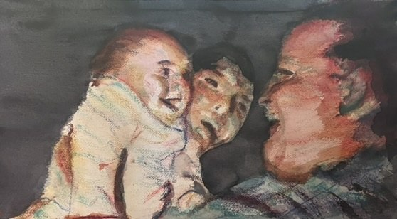
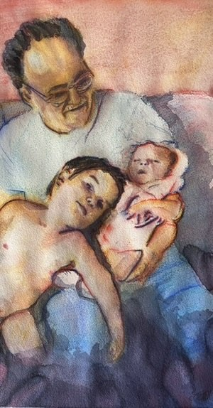

Artist · Vermillion Aurora
TJ Murphy

Artist statement
I paint to capture the luminosity of changing light and the character of the people and places around me. My practice began in 2020 with ink, watercolor, and watercolor pastel. Watching Mount Rainier from Denny Blaine and the morning sky from my balcony became a form of meditation—and an invitation to translate fleeting color into paint.
Working with a limited palette of three or four primary colors and a tone color, I build each painting’s colors through mixing and layering. Watercolor pastel brings deep saturation, while the texture of the paper creates granulation. I return often to shorelines, birds, and the meeting of sea and sky; in portraits, I look for the expression that makes a person distinctly themselves.
My recent outdoor murals extend this exploration into acrylic, spray paint, and airbrush. I am drawn to the way a painting can become part of its surroundings, bringing color and a sense of place into a garden or shared space.
Read how I create a watercolor commission →


Selected CV
Newest first. Full portfolio PDF available below.
Exhibitions
- — Bitcoin Film Festival, Kinoteka, Warsaw, Poland · solo show
- — Victrola Coffee Shop, Seattle, Washington · solo show
- — Adopting Bitcoin Cape Town, South Africa · solo show
- — Adopting Bitcoin El Salvador · solo show
- — Studio 601, Seattle, Washington · solo show
- — Intiman Theater Seattle Auction · benefit auction
- Current — My Living Room, Seattle, Washington · solo show
Books
- Watercolor Portraits — art book
- Watercolor Landscapes — art book
- Reflections on Time — twelve poems by Paul Michael Murphy, illustrated by TJ Murphy
Murals
- — Cormorant Presiding over Sunset on Puget Sound, garden mural, Seattle
- — Friends Club, festival mural, Lillooet, BC
- — Berlín, El Salvador, community mural, Bitcoin Festival
Film
- — Subject of Coined in Watercolor: The Art of Going All In, a documentary by Gavin Robertson; premiered at the Bitcoin Film Festival, Warsaw
Education
- Master’s degree, Quantitative Analysis and Operations Management
- Bachelor’s degree, Finance
Prior career
- Data analyst, Toyota
- Data scientist, Amazon
- Data scientist and Scrum Master, Nordstrom
- Data scientist, Discover
- Product owner and product manager, Bitcoin exchanges and startups
Background
Based in Seattle, I have made approximately 500 paintings, including many portraits. I have had solo shows at Studio 601 and Victrola in Seattle, and in El Salvador and Cape Town, South Africa, where I exhibited a series exploring the origin story of Satoshi Nakamoto, accompanied by twelve poems.
I have published two art books, Watercolor Portraits and Watercolor Landscapes and illustrated twelve poems for my father’s book, Reflections on Time. Original watercolors and portrait commissions are available through Vermillion Aurora, and I welcome opportunities to create outdoor murals.

Artist portfolio
Selected paintings, murals, and collaborations, with the story of my journey into art.
Read the portfolio on this page
Coined in Watercolor
Gavin Robertson’s documentary, Coined in Watercolor: The Art of Going All In, follows my journey into art.
Own one of my paintings? Share your story
Studio notes by email
New paintings, prints, exhibitions, and books, a few times a year. Unsubscribe anytime.